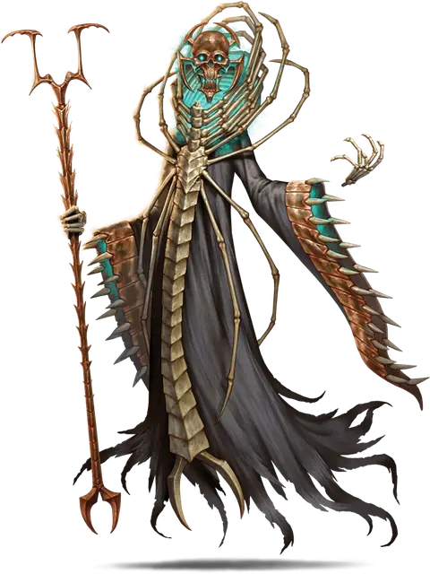

Фактол Скалл
Factol Skall
Средняя Нежить (Волшебник), нейтрально-злая, именной НИП

Класс Доспеха 17 (природный доспех)
Хиты 210 (28к8 + 84)
Скорость 30 футов, летая 30 футов (парит)
| мод | спас | ||
|---|---|---|---|
| СИЛ | 11 | +0 | +0 |
| ЛОВ | 16 | +3 | +3 |
| ТЕЛ | 16 | +3 | +9 |
| мод | спас | ||
|---|---|---|---|
| ИНТ | 20 | +5 | +11 |
| МДР | 14 | +2 | +8 |
| ХАР | 16 | +3 | +3 |
Навыки Восприятие +8, История +11, Магия +17, Медицина +8
Сопротивление урону холод; немагический дробящий, колющий, рубящий
Иммунитет к урону некротическая энергия, яд
Чувства истинное зрение 120 футов, пассивное Восприятие 18
Языки Все
Опасность 17 (18000 опыта)
Бонус мастерства +6
Особенности
Аура смерти. Существа в пределах 30 футов от Скалла получают помеху на спасброски против смерти.
Всеобъемлющее уничтожение. Существо, убитое Скаллом, может быть возвращено к жизни только с помощью заклинания истинное воскрешение [true resurrection] или исполнение желаний [wish].
Легендарное сопротивление (4/День). Если Скалл проваливает спасбросок, он может вместо этого сделать спасбросок успешным.
Восстановление. Если Скалл погибает, он превращается в пыль. Если планетариум душ не уничтожен, Скалл возрождается в Морге через 1к10 дней. Он появляется в пределах 5 футов от планетариума.
Сопротивление изгнанию. Скалл с преимуществом совершает спасброски против любых эффектов, изгоняющих нежить.
Действия
Мультиатака. Скалл совершает одну атаку Испепеляющим касанием или использует Использование заклинаний. Он также дважды использует Похоронный звон.
Испепеляющее касание. . Рукопашная атака заклинанием: +11 к попаданию, досягаемость 5 футов, одна цель. Попадание: 32 (6к8 + 5) урона холодом плюс 31 (7к8) урона некротической энергией, и если целью является существо, она не сможет восстановить хиты до начала следующего хода Скалла.
Похоронный звон. Скалл указывает пальцем на существо, которое видит в пределах 120 футов, наполняя разум цели видениями смерти и протяжным звоном похоронного колокола. Цель должна преуспеть в спасброске Мудрости Сл 19, иначе получит 14 (4к6) урона психической энергией и станет испуганной до начала следующего хода Скалла.
Туман смерти (1\день). Скалл источает смертоносный туман сферой радиусом 30 футов, центрированной на нём. Сфера огибает углы, её область сильно заслонена и существует до начала следующего хода Скалла, её не может разогнать ветер. Она не перемещается вместе с ним. Каждое существо, которое впервые входит в туман или начинает свой ход в нём, должно совершить спасбросок Телосложения Сл 19, получая 28 (8к6) урона некротической энергией и 28 (8к6) урона ядом при провале или половину этого урона при успехе. Гуманоид Среднего размера и меньше, убитый этим уроном, становится зомби [zombie] под контролем Скалла. Зомби действует по инициативе Скалла, сразу после его хода. При отсутствии какой-либо другой команды зомби пытается убить любое существо, не являющееся Нежитью, с которым он сталкивается.
Использование заклинаний. Скалл накладывает одно из следующих заклинаний, не нуждаясь в материальных компонентах, используя Интеллект в качестве базовой характеристики (Сл спасброска от заклинаний 19):
• Неограниченно: обнаружение магии [detect magic], волшебная рука [mage hand], фокусы [prestidigitation]
• 2/день каждое: восставший труп [animate dead] (действием), рассеивание магии [dispel magic], разговор с мёртвыми [speak with dead]
• 1/день каждое: перст смерти [finger of death], уход в иной мир [plane shift] (только на себя), проекция [project image]
Реакции
Скалл может совершать до трёх реакций в раунд, но только одну в ход.
Зловещее контрзаклинание. Скалл стучит зубами, чтобы прервать заклинание, накладывание которого он видит, в пределах 60 футов. Если заклинание 4-го уровня или ниже, заклинание проваливается и не оказывает никакого эффекта. Если заклинание 5-го уровня или выше, то Скалл совершает проверку Интеллекта (Сл 10 + уровень заклинания). В случае успеха заклинание проваливается и не оказывает никакого эффекта. Независимо от уровня заклинания, если оно не срабатывает, заклинатель получает 10 (3к6) урона некротической энергией.
Предсмертный опыт. В ответ на атаку Скалл телепортируется вместе со всем снаряжением, которое на нем надето, на расстояние до 30 футов в незанятое пространство, которое он может видеть.
Описание
Скалл - нынешний фактол Вестников Праха и единственный лидер, который когда-либо был у фракции. Популярная легенда о Мусорщиках гласит, что, помимо самой Леди Боли, Скалл является старейшим жителем Сигила, первым существом, которое жило и умерло в Городе Дверей. Вестники Праха боготворят своего нестареющего фактола, чей стоический облик стал эмблемой фракции. Скалла обычно можно застать за изучением душ в его планетариуме.
После долгих эпох существования Скалл находится в состоянии глубокой изношенности. Некогда бодрый лич с морщинистым телом, теперь вяло бродит по заброшенным залам Морга, ворча что-то себе под нос. Скалл выглядит не более чем парящей бестелесной головой с двумя руками, за которым развевается изодранный плащ. Печально известный среди фактолов Сигила, редко встречающийся во плоти, Скалл часто перекладывает свои бюрократические обязанности доверенным лицам из числа нежити или (в редких случаях) появляется как иллюзорный двойник.
Деликатное ведение дел в социуме теряется, когда вечное существование стерло всякую память о смертной жизни. В результате близкого распада сила Скалла значительно ослабла, но бросить ему вызов в бою - это такой же смертный приговор, как и прежде, и он отправляет своих врагов в долговечное небытиё. Опекун, смотритель и страж могил, фактол ведет как союзников, так и врагов из ложного существования жизни по пути к Истинной Смерти.